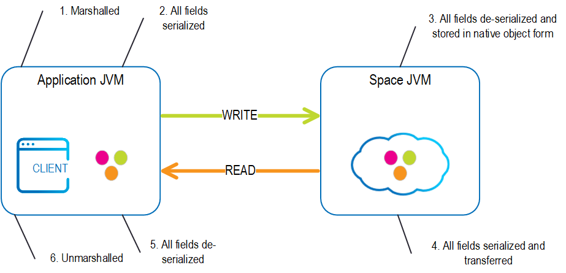
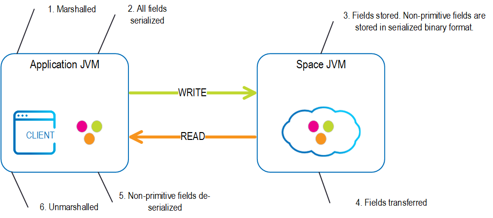
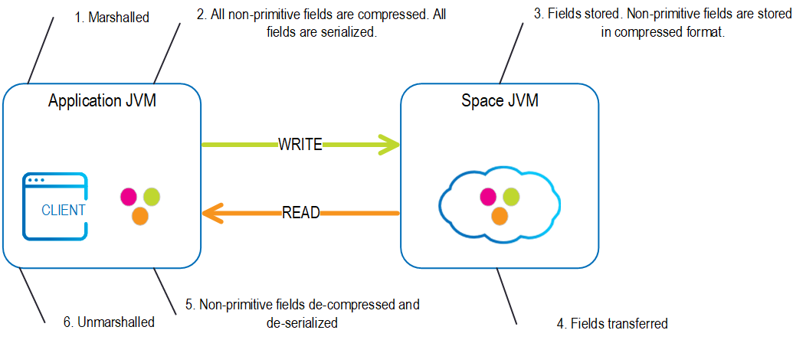

Each non-primitive space object property can be assigned a storage type decoration which determines how it is serialized and stored in the space. There are 3 storage types that are available:
OBJECT, which means that the property will be stored as a regular Java object in the space.BINARY, which means that the property will be stored in its serialized form in the space.COMPRESSED, which means that the property will be stored in a compressed serialized form in the space.


The default storage type can be determined for the entire space and/or for a specific space class. If a default storage type is not defined for the space, then the default value is OBJECT. Each property for which a storage type was not defined gets the class's default storage type if that exists and the space storage type if it doesn't.
There are a few motivations for changing the default storage type for a certain property:
To save serialization and de-serialization operations:
When a remote client writes a POJO to the space, fields with storage types other than OBJECT are not de-serialized on the server side, but rather stored inside the space in their serialized form, as received from the client. That also means that when a remote client reads the fields from the space, there's no need to serialize them since they're already serialized in the Space.
To reduce memory footprint:
When using the COMPRESSED storage type, the Space automatically compresses the serialized fields and keeps them in their compressed form on the space. This can reduce memory footprint in complex or large fields.
Schema evolution: When a certain class which serves as a space property is likely to change over time, you may want to store it in the space as a serialized object, making the property opaque to the space so it doesn't attempt to load the property class at all. In such a case, the user is responsible for version compatibility between different serialized forms of the same class.
| Storage Type | Code | Description |
|---|---|---|
| OBJECT | 0 | Non-primitive fields are serialized using Java's default serialization and stored in the space as object on the JVM heap. When using the OBJECT storage type, the space relies on the implementation of hashCode() and equals() methods when performing matching. You should make sure these are implemented correctly for non-primitive fields. This mode is optimal when accessing the space in embedded mode.When running in embedded mode, Space object fields are passed by reference to the client code. Extra caution should be taken with non-primitive mutable fields such as collections (e.g. Maps and Lists). Changes made to these fields outside the context of the space (without explicitly writing them to the space after they're changed) will impact the value of these fields in the space without the space being aware of that, which may result in unexpected behavior. For example, indexed lists can become stale because the space is unaware of the modified field values. For these fields it is highly recommended to pass a cloned value rather than the original reference itself. Passing a cloned value is important when several threads access the Object fields - for example application threads and replication threads. |
| BINARY | 1 | Non-primitive fields are transferred to and stored on the space as marshaled objects com.j_spaces.kernel.lrmi.MarshObject. With this mode there is no need to implement hashCode() and equals() since this property cannot be part of a query's criteria. |
| COMPRESSED | 3 | Non-primitive fields are compressed before transferred into the space and stored within the space in compressed mode. This option is useful when the object includes fields with a relatively large amount of data such as XML data. This mode speeds up the access to from a remote client and reduces the space memory footprint when dealing with large entries. The compression algorithm leverages the java.util.zip package. |
Native mode - non-primitive Space Object field types are not serialized - the space stores the references of the non-primitive fields. This mode provides the best performance. In multi-threaded environments, be careful when accessing the non-primitive fields after their parent Object has been stored into the space.
Full Serialization mode - non-primitive Space Object field types are serialized - the space stores a clone of the fields object. This impacts the performance.
GigaSpaces do not store the object reference within the space, but stores the object non-primitive references and the primitive fields data within the space within a document based structure. When having multiple threads accessing the same object simultaneously, you should clone the object after you read it and use the clone copy when updating the writing it back into the space. If you read an object from the space and change it without writing it back, you might modify one of its complex type fields that another thread holding its reference. (other thread might be replication thread...If there is also an index on this field the index won't be updated...)
In remote mode, the object's non-primitive fields are serialized where the serialization mode determine how it is done:
Native mode - non-primitive Object fields are serialized using Java Serialization. These are de-serialized at the space side before they are stored inside the space.
Full mode - supports the JavaSpace specification. When serialized, non-primitive fields are wrapped with a MarshaledObject. The MarshalledObject is de-serialized at the space side before it is stored, allowing you to perform matching using these fields. This mode is slower compared other options.
Compressed mode - non-primitive fields are compressed before being sent to the space at the client side. These are stored in compressed form within the space.
Specifying space level storage type can be done using any of the following:
<os-core:embedded-space id="space" space-name="mySpace">
<os-core:properties>
<props>
<prop key="space-config.serialization-type">1</prop>
</props>
</os-core:properties>
</os-core:embedded-space>
<bean id="space" class="org.openspaces.core.space.EmbeddedSpaceFactoryBean">
<property name="name" value="space" />
<property name="properties">
<props>
<prop key="space-config.serialization-type">1</prop>
</props>
</property>
</bean>
GigaSpace gigaspace= new GigaSpaceConfigurer(new EmbeddedSpaceConfigurer("space").
addProperty("space-config.serialization-type",
String.valueOf(StorageType.BINARY.getCode()))).gigaSpace();
Specifying property level storage type can be done using annotations or via the gs.xml file:
@SpaceClass
public class Person
{
private Integer id;
private Name name;
private Address address;
private File blog;
...
public Name getId() {return id;}
public void setId(Integer id) {this.id = id;}
@SpaceStorageType(storageType = StorageType.BINARY)
public Name getName() {return name;}
public void setName(Name firstName) {this.name = name;}
@SpaceStorageType(storageType = StorageType.COMPRESSED)
public Address getAddress() {return address;}
public void setAddress (Address address) {this.address = address;}
public File getBlog () {return blog;}
public void setBlog (File blog) {this.blog = blog;}
}
<gigaspaces-mapping>
<class name="com.gigaspaces.examples.Person">
<property name="name" storage-type="binary" />
<property name="address" storage-type="compressed" />
</class>
</gigaspaces-mapping>
The id property will default to OBJECT storage type because it is primitive. Note that every primitive (or primitive wrapper) and String property will have OBJECT storage type regardless of the one specified.
The blog property will default to OBJECT storage type because no storage type was specified for that property or for its containing class (assuming that the space serialization type is OBJECT).
Specifying call level storage type can be done using annotations or via the gs.xml file:
@SpaceClass(storageType=StorageType.BINARY)
public class Person
{
...
}
<gigaspaces-mapping>
<class name="com.gigaspaces.examples.Person" storage-type="binary" />
</gigaspaces-mapping>
Specifying a document property's storage type done by passing it as a parameter to the SpaceTypeDescriptorBuilder.addFixedProperty method when creating the type descriptor:
public SpaceTypeDescriptor getTypeDescriptor()
{
return new SpaceTypeDescriptorBuilder("Person")
.idProperty("id")
.documentWrapperClass(Person.class)
.addFixedProperty("address", Address.class, SpaceDocumentSupport.DEFAULT, StorageType.COMPRESSED)
.create();
}
Specifying a class-level storage type done by passing it as a parameter to the SpaceTypeDescriptorBuilder.storageType method when creating the type descriptor:
public SpaceTypeDescriptor getTypeDescriptor()
{
return new SpaceTypeDescriptorBuilder("Person")
.idProperty("id")
.documentWrapperClass(Person.class)
.storageType(StorageType.COMPRESSED)
.create();
}
When creating a document using a POJO, the property storage types will be determined by the POJO definition.
A property's storage type is inherited by its containing class' sub classes. Overriding the storage type is not allowed (i.e. if a property has COMPRESSED storage type in a super class it is also the storage type of that property in a sub class and an attempt to change it will cause an exception to be thrown by the space).
The following types must have the OBJECT storage type:
A primitive (or a primitive wrapper) property
A String property
The ID property
The routing property
Indexed properties
If no storage type is specified for such properties it will automatically default to OBJECT (regardless of class level or space level storage types).
If a storage type other than OBJECT is declared on the property, an exception will be thrown.
The following annotations cannot be used in conjunction with the storage type annotation for the same property:
spaceVersion
spacePersist
spaceLeaseExpiration
spaceDynamicProperties
spaceExclude
If a storage type is declared with one of these annotations, an exception will be thrown.
Only an OBJECT storage type property can be queried:
For example, if the address property of a certain class is marked as having the COMPRESSED storage type, the following will throw an exception:
gigaSpace.read(new SQLQuery<Person>(Person.class,"address.country='USA'"));
(Address should have OBJECT storage type for the query to succeed).